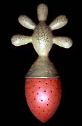
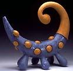
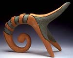
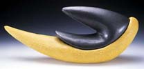

| Bryan
Hiveley
American ceramist.
Miami,
Florida based Hiveley received a BFA from the University of Minnesota,
Duluth in 1996 and an MFA from the University of South Carolina
(USC), Columbia in 1999. He was a summer studio assistant at the
Penland School of Crafts in 1997-99, technical assistant at Haystack
Mountain School of Crafts in 1999 and has taught at the Miami International
University of Art and Design since 2000. He was artist-in-residence
at the Arrowmont School of Arts and Crafts in 1999-2000, the University
of Miami, Coral Gabels in 2000 and the Watershed Center for the
Ceramic Arts in 2004.
Hively has received numerous grants and awards, including a USC
Research Travel Grant in 1998, a USC Dean’s Award for Outstanding
Graduate Endeavors in 1999 and the Miami Cultural Affairs Council
Tigertail Artist Grant in 2004. He makes organic, abstract and semi-abstract
sculpture inspired by nature and environmental concerns and suggestive
of ‘universal’ biomorphic forms.


Artist's Statement:
The natural world has always been the driving force in my creation
of art. Nature is an endless source of inspiration and fascination.
Its beauty and intelligence are reflected in the simplicity of a
seedpod or the complexity of an entire ecosystem. In my sculptures,
stacked forms act as metaphors for the delicate balances in nature
and the interdependency of living things. It is not only the botanical
or zoological that interests me; landscape itself can be the source
of inspiration. Nature, when left alone, will regulate itself, but
human impact on the environment will push it off balance. This
is suggested by the counterbalancing of different objects. The suggestive
tilt of certain sculptures creates a spatial tension around the
work. This deceptively fragile environment alludes to the urgency
of environmental concerns. I use texture and color to suggest interior
and exterior spaces, the protective and the vulnerable. My surface
treatment references the body, organic and man-made surfaces, and
the aquatic and terrestrial spheres. My goal is not to directly
mimic specific objects in nature, but rather to suggest universal
biomorfic forms with no discernable identity. Individual forms may
take on the context of a crawling insect, climbing plant form, or
enlarged paramecium. It is my hope that the viewer will reexamine
the natural world around them, reconsidering the importance of the
most obvious natural wonders as well as what would seem to be the
most insignificant.
More Artists of the Week
More Articles
|
{kind=link}
{kind=link}
{kind=link}
{kind=link}